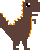

- 
Тиранозавр рекс
Тиранозавр рекс був одним із найвідоміших динозаврів, і він
був одним із найбільших хижаків, які коли-небудь ходили по Землі.
Він міг досягати довжини до 12 метрів і ваги до 7 тонн.
Тиранозавр рекс мав потужні щелепи з гострими зубами,
які він використовував для полювання на інших динозаврів.
Трицератопс
Трицератопс був рослиноїдним динозавром, який був відомий
своїми трьома рогами на голові. Він міг досягати довжини до 9 метрів
і ваги до 6 тонн. Трицератопс мав потужні щелепи, якими він міг розгризати тверду рослинну їжу.
Брахіозавр
Брахіозавр був одним із найбільших рослиноїдних динозаврів,
які коли-небудь ходили по Землі. Він міг досягати довжини до 25 метрів
і ваги до 80 тонн. Брахіозавр мав довгу шию, яка дозволяла йому досягати високої рослинності.